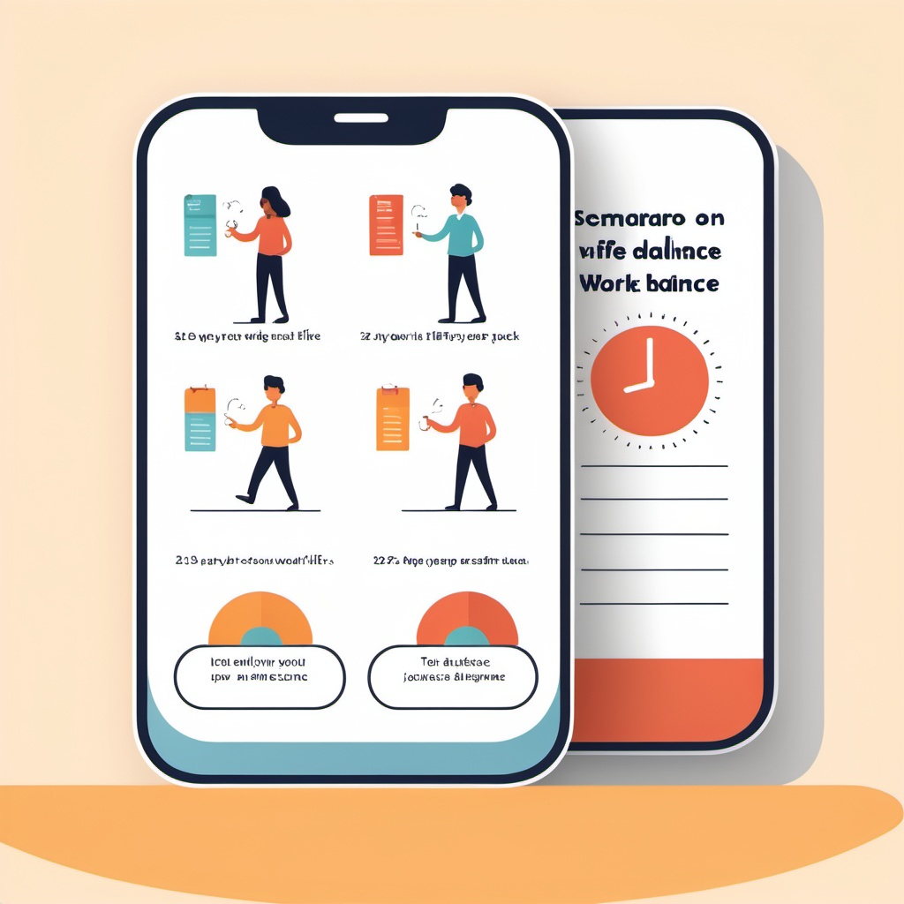

Problem Statement

Work-Life balance is an issue that affects the lives of many people in the workforce industry.
Affinity Diagram

Different topic ideas and reasons why someone might struggle with their work-life balance.
Sketches
This app can help individuals achieve a great work-life balance.
There are tools in this app that will tell you what things you might want to change or work on.